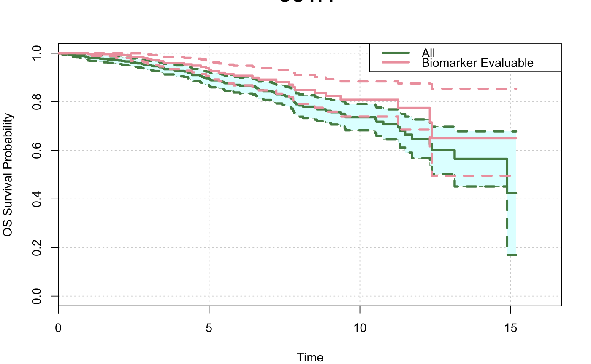

This function provides K-M curves to compare full population vs. BEP.
CompareKM(data, tte, cens, trt = NULL, bep, bep.indicator = 1, bep.name = "Biomarker Evaluable", itt.name = "All", col.itt = "palegreen4", col.bep = "lightpink2", col.ci = "lightcyan", shaded.ci = TRUE, xlim = NULL, xat = NULL, ylab = paste(tte, "Survival Probability"), xlab = "Time", main = "", surv.conf.type = "plain", pdf.name = NULL, pdf.param = list(height = 5), par.param = list(mar = c(4, 4, 3, 2)), ...)
| data | Input data frame. Rows are patients and columns are variables (e.g. demographics variables, time to event variables, biomarker variables, treatment indicator, etc.). One patient per row. |
|---|---|
| tte | column name that indicates the time to event variable |
| cens | column name that indicates the censoring variable associated to tte. 1 indicates event and 0 indicates censoring |
| trt | name of the treatment column. If trt is specified, the analysis will be performed within treatment arm. if it is NULL, the comparison will be performed using all samples. |
| bep | name of the column which indicates biomarker evaluable population. If it is null, patients who have non NA records in biomarker variable will be used as BEP. |
| bep.indicator | In the subpopulation column, which value is used to define the biomarker evaluable population. |
| bep.name | preferred display name of the biomarker evaluable population. If it is NULL, bep will be used. |
| itt.name | preferred display name of the full population (e.g. ITT). If it is NULL, "All" will be used. |
| col.itt, col.bep, col.ci | Color for itt curve, bep curve and confidence interval curve (CI) |
| shaded.ci | Whether add background shade to disply CI |
| xlim, xat, ylab, xlab, main | see |
| surv.conf.type | confidence interval type. Default is "plain". see conf.type in survfit |
| pdf.name | name of output pdf file. If it is NULL (default), the plots will be displayed but not saved as pdf |
| pdf.param | A list of parameters that define pdf graphics device. See |
| par.param | A list of parameters that define graphcial parameters. See |
| ... | additional parameters for |
This function generates KM curves to compare full population vs BEP, within each treatment arm.
data(input) sample.data <- input CompareKM(data=sample.data, tte="OS",cens="OS.event", main="OS ITT", bep="BEP")